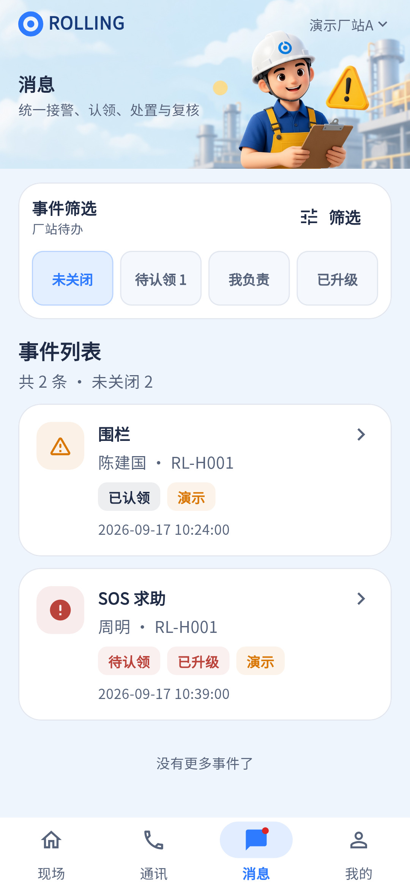

当前连续滚动是现有增强应保留；主要补状态分组、计数口径和事件摘要，避免退回翻页。
相同 · 已有基础
统一事件列表、普通核验/SOS入口、筛选、认领状态、消息红点已实现。
不同 · UI与场景
当前紧凑四快捷项“未关闭/待认领/我负责/已升级”，参考三状态页签及二行筛选；卡片当前缺清晰作业/位置摘要。
01 / 先看 UI
两图显示宽度统一；设计390px与当前360逻辑宽的画布不同。各图可独立滚动到底，点击“原图”放大。


使用既有组件截图；业务数据为示例。
02 / 逐项核对功能与小交互
入口：底部导航 → 消息 · 当前形态：主页面
| 编号 | 部位 | 设计要求 | 当前UI | 功能结论 | 下一步 |
|---|---|---|---|---|---|
| 22-01 | 头部 | Logo、消息标题、插画 | 当前已有同源头图，缺独立品牌栏铃铛 | 已有展示，UI部分一致 | 按公共头部规范微调 |
| 22-02 | 状态页签 | 待处理/处理中/已关闭及计数 | 当前未关闭、待认领、我负责、已升级 | 部分：可在弹层筛选全部状态，但主页不对应 | 定义待处理含哪些状态，不能把open与active混用 |
| 22-03 | 类型入口 | 全部类型下拉 | 当前主要在筛选弹层 | 部分：类型过滤已接 | 补快捷类型入口或图上明确当前类型 |
| 22-04 | 我的认领 | 按当前认领人筛选 | 当前“我负责” | 已有代码：claimantUserId筛选 | 统一文案，保留账户作用域 |
| 22-05 | 事件卡 | 类型、标题、人员、设备、作业/位置、时间、状态 | 当前有类型/人/设备/时间/标签，缺丰富作业位置 | 部分：数据模型有上下文，列表未按图展示 | 补摘要并区分位置未知 |
| 22-06 | 核验入口 | 普通事件查看核验 | 当前整卡点击 | 已有代码：eventId详情，普通用EventReferenceView | 增加明确动作文案，可点击区域一致 |
| 22-07 | SOS入口 | 查看协助 | 当前SOS卡进入SOS详情 | 已有代码：按事件类型分支 | 保持高风险标识及原事件ID |
| 22-08 | 列表加载 | 连续查看全部结果 | 当前接近底部加载、去重、重试和结束提示 | 已有代码：连续滚动与滚动位置恢复 | 保留，验首屏/中部/底部和返回位置 |
| 22-09 | 刷新推送 | 新事件与红点 | 当前收件计数、刷新通知接入 | 已有代码：实时通知另需设备验收 | 未知计数不硬写0，保留刷新提示 |
| 22-10 | 状态中文 | 图中待核验/处理中等 | 当前待认领/已认领/已升级等 | 部分：业务状态与展示分组不同 | 列状态映射表再改UI，不改底层状态机 |
源码依据
events/events_page.dart:272,436,628,647,1073；events/event_controller.dart；events/event_repository.dart:15
链接为随报告保存的带行号快照；行号对应分析时源码。以函数和字段共同定位，不能将请求代码视为执行成功证据。